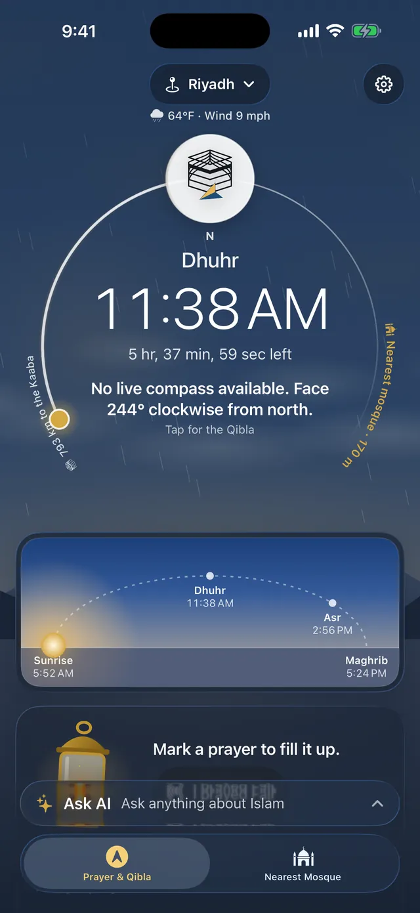
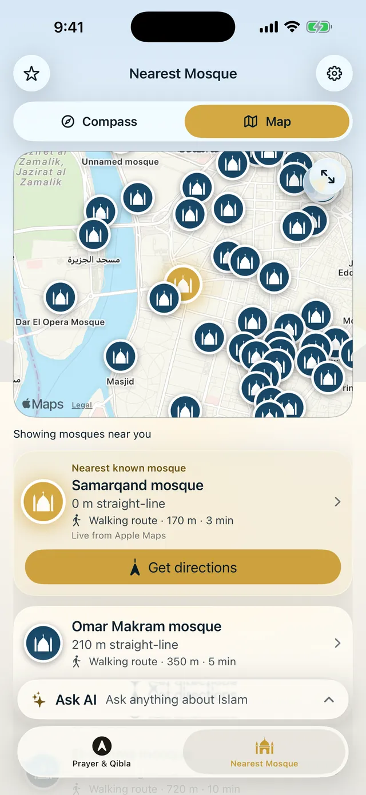
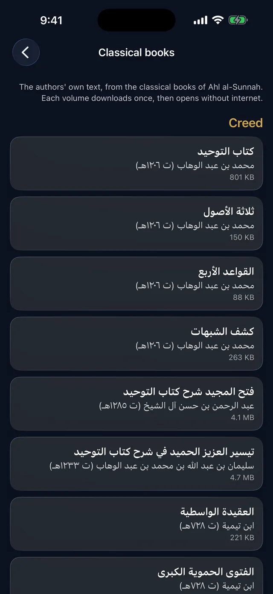
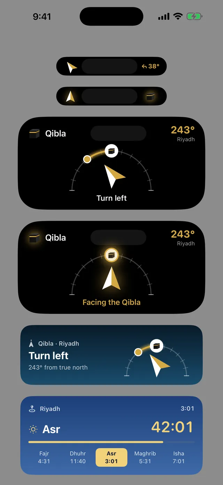
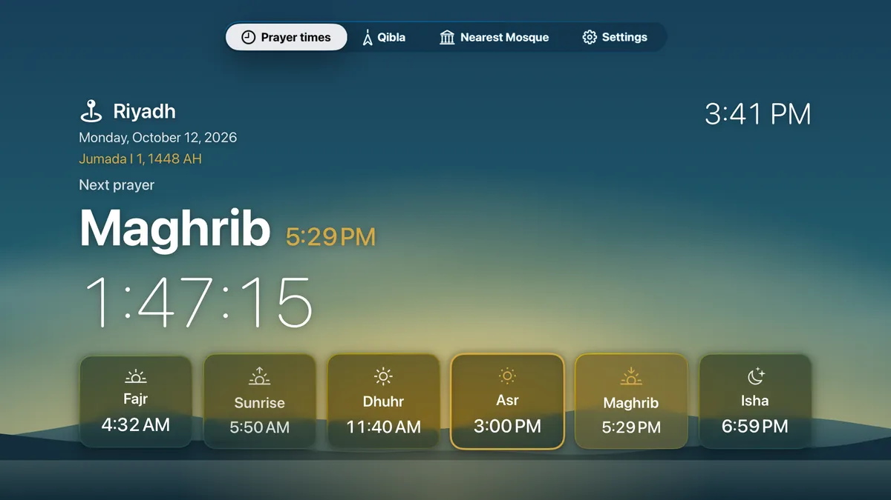
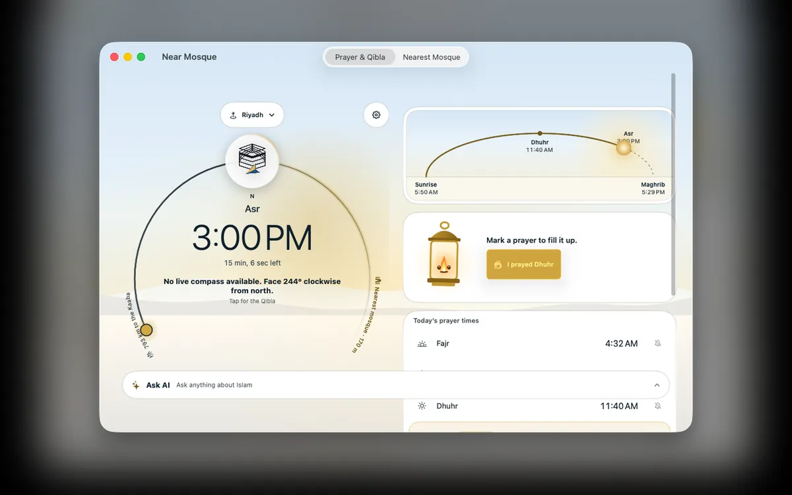
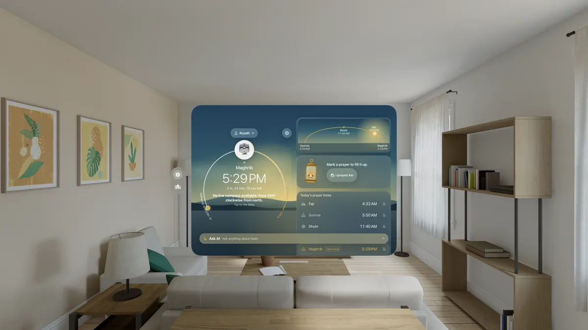
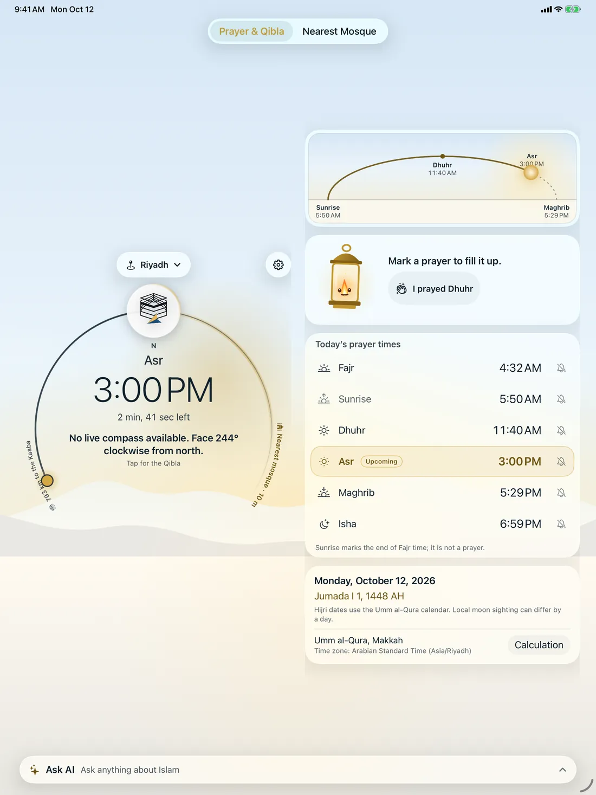
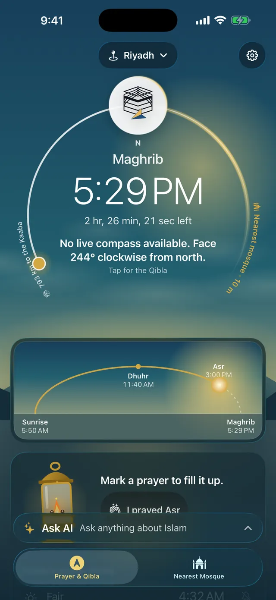

Your next prayer
Somewhere on Earth, the Adhan is being called right now. Prayer times, the Qibla and the nearest mosque for wherever you are, in one calm app.
Get the appQibla
Turn your phone and the arrow leads you to the Kaaba. When you face it, the Qibla lights up and you feel a gentle vibration.
- Bearing and distance to the Kaaba
- Without a compass, it is drawn from north and says so
Prayer times
The header shows the next prayer and the time left. Its sky turns pink at Fajr, gold at Asr and violet at Maghrib, and if you like, it shows your city’s weather too.
- 13,090 cities built in, and 11 calculation methods suggested for your country
- Today’s six times, each with its own bell, and the Hijri date
- Sky follows the weather: off until you turn it on; then the city’s location, rounded to about 1 km, goes to MET Norway


Nearest mosque
The compass shows each mosque at its real direction. Switch to the map for walking time and directions.
- Directions in Apple Maps or Google Maps
- Built-in mosque data, plus Apple Maps when online search is on


Ask and the library
Answers quote the books on your phone and list each source. A scholar’s fatwa comes first when one matches. Behind them are 99 classical books you can read offline.
- Written on your phone by Apple’s on-device model. Questions never go to a cloud AI.
- 25 common questions in 22 languages, labelled as awaiting scholar review
- Creed, Hadith, Fiqh, Tafsir and Sirah, each volume checked before it opens
Answers quote books. They are not a fatwa.


Adhan, reminders and widgets
Choose the Adhan of Masjid al-Haram or al-Masjid an-Nabawi for each prayer, with a reminder 10 or 5 minutes before. The countdown waits on your Lock Screen and in the Dynamic Island.
- A Fajr alarm, and Friday reminders for Al-Kahf and Jumu’ah
- Silent during prayer: Do Not Disturb on Android; on iPhone, a Shortcut you run with one tap from the Adhan notification
- Ten kinds of widgets, and Siri tells you the next prayer


Every screen
One listing for iPhone, iPad, Mac, Apple TV, Vision Pro and Apple Watch, and the same prayer times and Qibla on Android, Windows and Linux.
- Apple Watch: the next prayer, the Qibla with a tap on your wrist, and tasbih on the Digital Crown
- 36 interface languages, 6 of them right to left
- Android on Google Play; Windows and Linux downloaded from this page





Privacy
Prayer times, the Qibla and your answers are worked out on your device. There is no account to make and nothing about you is sent to us.
- Prayer times and Qibla work offline
- Online only for mosque search (with your location rounded to about 1 km), maps, the downloads you choose and the weather sky if you turn it on
Near Mosque
No account to create and no ads to sit through.